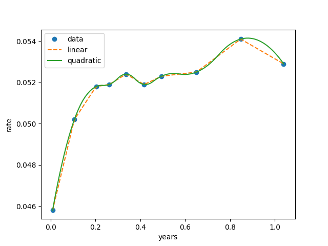
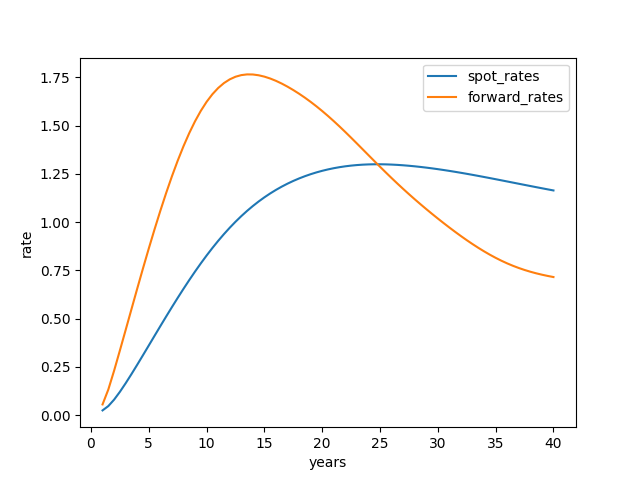

Yield Curve Construction and Analysis
Last edited on: July 19, 2021 1:58 PM
A yield curve is a line that plots yields (interest rates) of bonds having equal credit quality but differing maturity dates. In this article, we survey a selection of the interpolation algorithms that are in use in financial markets for construction of curves such as forward curves and yield curves. The term structure of interest rates is defined as the relationship between the yield-to-maturity on a zero coupon bond and bond’s maturity.
Yield curve mathematics
For a discount or zero coupon bond, the price of an instrument now at time $0$ which pays $1$ unit of currency at time $t$ is denoted $Z(0, t)$. The inverse of this amount is denoted $C(0, t)$ and called the capitalization factor. Note that $Z(0, t)$ is decreasing in $t$ for no arbitrage. Let the time $0$ continuous compounded risk free rate for maturity $t$ be denoted $r(t)$.
$$C(0, t) = \exp(r(t)t)$$
$$Z(0,t) = \exp(-r(t)t)$$
$$r(t) = - \frac{1}{t} \ln Z(0, t)$$
In normal markets, yield curves are upwardly sloping, with longer term interest rates being higher than short term. A yield curve which is downward sloping is called inverted. A yield curve with one or more turning points is called mixed. In a stable market with reasonably liquidity, one can observe a consistent mixed shape over long periods of time.
While normal curves point to economic expansion, downward sloping (inverted) curves point to economic recession.
Interpolation and bootstrap
In finance, bootstrapping is a method for constructing a (zero-coupon) fixed-income yield curve from the prices of a set of coupon-bearing products, e.g. bonds and swaps. So far we assumed that bonds trade with sufficient liquidity and as a continuum i.e. a zero coupon bond exists for every redemption date $t$. In fact, such bonds rarely trade in the market, and we need to impute such a continuum via bootstrapping.
1 | |

Forward rates
The forward discount factor for the period from $t_1$ to $t_2$ at time $0$ satisfies the no arbitrage equation:
$$Z(0, t) Z(0; t_1, t_2) = Z(0, t_2)$$
The forward rate governing the period from $t_1$ to $t_2$, denoted $f(0; t_1, t_2)$, satisfies:
$$\exp(-f(0; t_1, t_2)(t_2 - t_1)) = Z(0; t_1, t_2)$$
Note that forward rates are positive and we have:
$$f(0; t_1, t_2) = -\frac{\ln Z(0, t_2) - \ln Z(0, t_1)}{t_2 - t_1} = - \frac{r_2 t_2 - r_1 t_1}{t_2 - t_1}$$
Zero curve to forward curve conversion
Let instantaneous forward rate for a tenor of $t$ be denoted $f(t)$, we have:
$$f(t) = \frac{d}{dt} r(t)t = r(t) + r^{\prime}(t)t$$
Hence, the forward rates will lie above the yield curve when the yield curve is normal, and below the yield curve when it is inverted.
1 | |
Forward curve to zero curve conversion
Given the forward rate function, we can find the risk free function by integrating:
$$r(t)t = \int_{0}^{t} f(s) ds = r_{i-1}t_{i-1} + \int_{t_{i-1}}^{t} f(s)ds, \quad t \in [t_{i-1}, t_i]$$
Note that the average of the instantaneous forward rate over any of our intervals $[t_{i-1}, t_i]$ is equal to the discrete forward rate for that interval.
1 | |
Bank of England UK yield curve data
The government liability curve is based on yields on UK government bonds (gilts) and yields in the general collateral repo market. The nominal yield curves are derived from UK gilt prices and General Collateral (GC) repo rates. The real yield curves are derived from UK index-linked bond prices. Using the Fisher relationship, we are also able to estimate a term structure of inflation expectations for the United Kingdom.

All articles in this blog are used except for special statements CC BY-SA 4.0 reprint policy. If reproduced, please indicate source Ziyi Zhu!